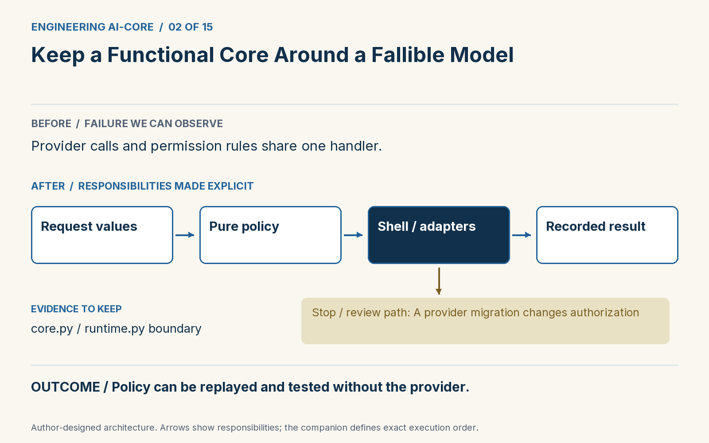

ในบทความนี้
In this post
1. ปัญหาทางวิศวกรรม
เป้าหมายบทนี้
แยกกฎที่เป็นฟังก์ชันบริสุทธิ์ออกจาก network เพื่อเปลี่ยนโมเดลได้โดยไม่เปลี่ยนสิทธิ์และกติกางาน
การปรับโครงสร้างขั้นแรกใช้ทักษะที่โปรแกรมเมอร์มีอยู่แล้ว: แยกการตัดสินออกจากผลข้างเคียง ฟังก์ชันบริสุทธิ์รับค่าและคืนค่า โดยไม่อ่าน credential ไม่เรียก provider และไม่เขียนไฟล์ ส่วน imperative shell ประสานงานเหล่านี้ แนวคิดใน Boundaries ของ Gary Bernhardt ใช้ค่าธรรมดาเป็นรอยต่อระหว่างส่วนประกอบ [1] เมื่อนำมาใช้กับ AI เราจึงมีที่ตรวจ policy ซึ่งคงที่ได้ แม้เปลี่ยนโมเดลข้างใน
ใน companion ไฟล์ core.py เก็บ input_check, authorize, output_check และ quality_gate ส่วน runtime.py กำหนดลำดับ เรียก provider คุมงบ และประกอบ trace ตัว provider มี decide, generate, judge ให้เรียก FixtureProvider ทำให้เห็นรอยต่อโดยไม่ต้องต่อ network ส่วน JevProvider ใช้เรียกคำตัดสินจริงแบบเลือกเปิดเอง ใน adapter นี้การสร้างร่างยังมาจาก candidate ที่ส่งเข้าไป เราไม่ได้สมมติว่า Jev เขียนโค้ดให้ หากจะใช้ generator จริงต้องเพิ่ม adapter พร้อมรุ่น prompt และบันทึก usage ของตัวเอง
2. ขอบเขตที่ต้องออกแบบ


ความเป็นฟังก์ชันบริสุทธิ์ไม่ได้ทำให้คำตัดสินด้านความหมายแน่นอน response เป็น input ที่ส่งให้ฟังก์ชัน policy ดังนั้น response และกฎชุดเดิมให้ผล routing เดิมได้ แต่ response ที่เปลี่ยนก็เปลี่ยนทางเดินได้ เวลาสืบเหตุการณ์จึงแยกสองงาน: replay ค่าที่บันทึกเพื่อดูกฎ กับทดลองเรียกโมเดลจริงเพื่อดูความแปรผัน ทั้งสองงานตอบคนละคำถามและใช้แทนกันไม่ได้
3. อ่าน implementation
ส่วนโค้ดจาก companion เพื่ออ่านประกอบ ใช้คำสั่งในหัวข้อ 5 เพื่อรันตัวอย่างที่ครบ dependency
def authorize(request, principal):
# principal comes from the application's auth layer, never from model output.
if principal != "maintainer" or request["repo"] != "demo/shop":
return Gate("reject", "permission_denied")
if request["action"] != "draft_patch":
return Gate("reject", "action_denied")
return Gate("pass", "draft_capability")เก็บตัวตนผู้เรียกแยกจาก issue ที่โมเดลเห็น authorize(request, principal) รับ principal จากชั้นยืนยันตัวตนของแอป เมื่อส่งค่าเดิมต้องได้ผลเดิม เมื่อเปลี่ยน maintainer เป็น guest ต้องได้ permission_denied เราทดสอบได้โดยไม่ต้องมี mock server หรือ API key แม้ต้องส่งค่าผ่านรอยต่อให้ชัดขึ้น แต่การเปลี่ยน provider จะไม่ทำให้โมเดลได้สิทธิ์อนุมัติตัวเอง ในระบบใหญ่ใช้ typed interface และ dependency injection รักษาขอบเขตนี้ระหว่างโมดูล
4. เปรียบเทียบผลที่ได้
| เส้นทาง | ผลที่สังเกตได้ |
|---|---|
| ก่อนเพิ่มด่านนี้ | provider และกฎสิทธิ์อยู่ใน handler เดียว |
| หลังเพิ่มด่านนี้ | replay และทดสอบ policy ได้โดยไม่เรียก provider |
ผลต่อไปนี้มาจาก fixture ที่กำหนดคำตอบไว้เพื่อตรวจสถาปัตยกรรม ไม่ใช่ผลวัดความแม่น ความเร็ว หรือต้นทุนของ Jev จริง
{
"same_input_same_policy": true,
"reviewer": "permission_denied"
}5. รัน ทำให้พัง และอธิบาย
Part 02 code · Implementation · Tests: test_permission_stops_before_inference · Exercise
git clone https://github.com/Anirach/ai-core-engineering-workbench.git
cd ai-core-engineering-workbench
git checkout 18cdfcd4156d3d02acb8badf3b3a0a823113e0ed
python3 -m workbench.lesson 2
python3 -m unittest tests.test_boundaries.BoundaryTests.test_permission_stops_before_inference -vลองทำด้วยตัวเอง
ย้ายการตรวจสิทธิ์เดิมเป็น pure function แล้วทดสอบผู้ใช้สองสิทธิ์กับ response โมเดลชุดเดียวกัน
สิ่งที่ต้องส่ง: input ที่ลอง สถานะและเหตุผลที่ได้ และคำอธิบายว่าด่านใดเป็นผู้รับผิดชอบ ห้ามแก้ expected result เพียงเพื่อให้ test ผ่าน
6. แหล่งอ้างอิงและขอบเขต
เอกสารต้นทางและข้อจำกัด
ตรวจเอกสาร 2 พฤศจิกายน 2026 ตัวอย่างและ threshold เป็นการออกแบบเพื่อการสอน การอ้าง [1], [2] ตรงกับลำดับข้างล่าง ยังไม่ได้วัด live API
- Gary Bernhardt, Boundaries (SCNA 2012)Value boundaries and functional core / imperative shell.
1. The engineering problem
Learning outcome
Separate pure policy from network calls so model changes do not rewrite your business rules.
The first refactor is familiar to experienced programmers: separate decisions from effects. A pure function receives values and returns a value without reading credentials, calling a provider or writing files. An imperative shell coordinates those operations. Gary Bernhardt's Boundaries talk makes simple values the interfaces between components [1]. For an AI workflow, that division gives us a stable place to test policy while the model remains replaceable.
In the companion, core.py contains input_check, authorize, output_check and quality_gate. runtime.py owns ordering, provider calls, budgets and trace assembly. A provider object supplies decide, generate and judge. FixtureProvider makes those boundaries visible without a network connection. JevProvider implements real semantic decisions as an optional adapter. Generation remains a supplied candidate in that adapter; the course does not quietly pretend Jev writes code. A production generator would be a separate adapter with its own version, prompt and usage record.
2. The boundary to design
Notice that functional purity does not make a semantic judgment deterministic. The response is an explicit input to a pure policy function, so the same response and policy produce the same routing decision. A different model response can still change the workflow. This distinction is useful during incident review: replay recorded values to inspect policy behavior, then run a separate live experiment to investigate model variation. Neither experiment substitutes for the other.
3. Read the implementation
Implementation excerpt from the companion. Run the complete lesson below with its imports and fixtures.
def authorize(request, principal):
# principal comes from the application's auth layer, never from model output.
if principal != "maintainer" or request["repo"] != "demo/shop":
return Gate("reject", "permission_denied")
if request["action"] != "draft_patch":
return Gate("reject", "action_denied")
return Gate("pass", "draft_capability")Keep principal identity outside the model-facing issue. authorize(request, principal) reads the authenticated caller supplied by the application. Repeating the call with the same values yields the same verdict; changing principal from maintainer to guest yields permission_denied. We can test this without a mock server or API key. The tradeoff is a little more explicit plumbing. In return, a new model provider does not silently inherit the power to grant itself access. For larger applications, use typed interfaces and dependency injection to preserve this division across modules.
4. Compare the outcomes
| Approach | Observable outcome |
|---|---|
| Before this control | Provider calls and permission rules share one handler. |
| After this control | Policy can be replayed and tested without the provider. |
The following output comes from scripted fixtures that verify architecture behavior. It is not a measurement of live Jev accuracy, latency, or cost.
{
"same_input_same_policy": true,
"reviewer": "permission_denied"
}5. Run, break, and explain
Part 02 code · Implementation · Tests: test_permission_stops_before_inference · Exercise
git clone https://github.com/Anirach/ai-core-engineering-workbench.git
cd ai-core-engineering-workbench
git checkout 18cdfcd4156d3d02acb8badf3b3a0a823113e0ed
python3 -m workbench.lesson 2
python3 -m unittest tests.test_boundaries.BoundaryTests.test_permission_stops_before_inference -vYour turn
Move an existing permission check into a pure function. Test two principals against the same model response.
Keep three artifacts: the input you tried, the resulting state and reason, and an explanation of which boundary owns that result. Do not change an expected result merely to make a test pass.
6. Sources and limits
Primary sources and evidence limits
Sources checked 2 November 2026. Examples and thresholds are teaching designs. Inline [1], [2] follow the order below. Live API performance has not been measured.
- Gary Bernhardt, Boundaries (SCNA 2012)Value boundaries and functional core / imperative shell.